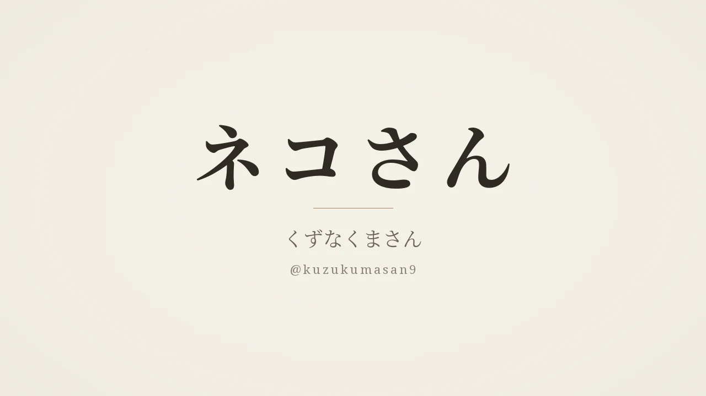

原帖只有一句拉长了的招呼：「ネコさんが～！！」附件是一段约 7 秒、1080×1620 的竖版视频。作者是クズなくまさん（@kuzukumasan9），账号专门做「くまさん」这一只熊的 AI 内容。本页收录作者原帖的全文中译，并附日文原文。视频和官方预览静帧都是作者的插画作品，未见开放许可，本页不转载；封面是自制字体图。要看这七秒，请到原帖。

这张帖在讲什么
2026-11-16 17:18（新加坡时间，UTC+8），作者发了这条日文短帖。帖文没有再解释剧情，也没有给出工具或模型名称。唯一的链接展开后就是本帖自己的视频，不是另一篇文章或仓库。
本库只用了作者发布的官方预览静帧。静帧是一张偏水粉的插画，不是照片：浅米色的室内，左侧一只棕色的熊直立着，举起一根羽毛逗猫棒；中间一只橘斑猫踮起来够那簇羽毛，近处一只灰斑猫像是刚跳起来；猫爬架顶上还坐着一只三花猫，架子上有粉、青绿、浅紫的圆形台面，前景有一团粉红毛线。这些只是封面帧里能看见的东西，不能代替完整动画 ⚠️。
同一条帖下，有人觉得熊和猫玩得很开心，也有人直接问「用了哪款视频模型」「怎么做的」。到 2026-11-17 约 13:42（新加坡时间）核对为止，线程里还没有作者自己的回复 ⚠️。
原帖全文
以下为作者日文原帖的中文译文。原帖不是长文，附件是视频。
猫来啦——！！
作者：クズなくまさん（@kuzukumasan9）；发布：2026-11-16 17:18（新加坡时间，UTC+8）。原帖附视频，点击观看。
日文原文
ネコさんが～！！
这位作者
クズなくまさん的账号创建于 2023-10-21。资料简介说，自己每天都在发「让脑子融化的治愈」内容，专注くまさん的 AI 作品；口号是「クズなのにかわいい」——明明有点废，却很可爱。地点栏写着「森の中」。公开主页是 note.com/kuzukumasan9，上面有一篇自我介绍，以及多篇以这只熊为主角的短文；本页不转载那些文章。
简介里还写了 AIBATO 亚军、あるくま展 2025、ROUND1 联名等履历，并说工作请私信。这些都是资料自报 ⚠️。2026-11-17 约 13:42（新加坡时间）读取时，账号约有 29,691 名关注者、11,405 条帖子，这些数字会变 ⚠️。
许可
作品未声明开放许可，角色、插画、视频与帖文版权归作者所有；本页收录作者本人原帖的全文中译并附原文。
有一处不要弄混。作者曾在 2026-10-29 的另一条帖子里，介绍用 Pollo Recast 把先前的「熊面包」视频改成万圣节南瓜面包。那是另一段视频的制作说明，还带有推广标记，不能写成这条「ネコさん」短片所用的工具 ⚠️。
传播数据（快照）
2026-11-17 约 13:42（新加坡时间，UTC+8）经 X 接口读取时，原帖约 23,133 次浏览、2,020 个赞、338 次转发、11 条回复、7 条引用、201 次收藏。作者账号当时约 29,691 名关注者。这些数字会变，只作当时记录，不是效果评测。
注记与署名
- 这是作者本人日文短帖的全文中译与独立导读。作品未见开放许可；本页不转载视频，也不使用官方预览静帧作封面。
- ⚠️ 所用模型、提示词、是否先画静帧再做视频，作者在本线程里都没有说明；有人提问，尚未看到回答。
- ⚠️ 不要把 2026-10-29 那条 Pollo Recast 的说明写成这件作品的制作方法。
- ⚠️ 简介中的竞赛、展览与联名履历为作者自报，未另行核实；传播数字与关注者数会变。